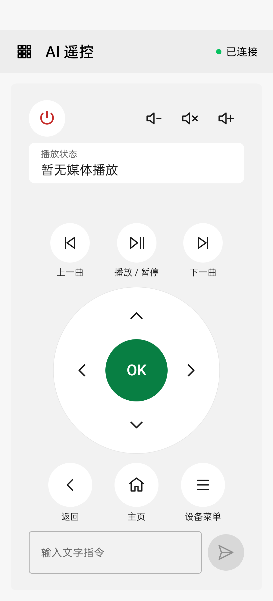
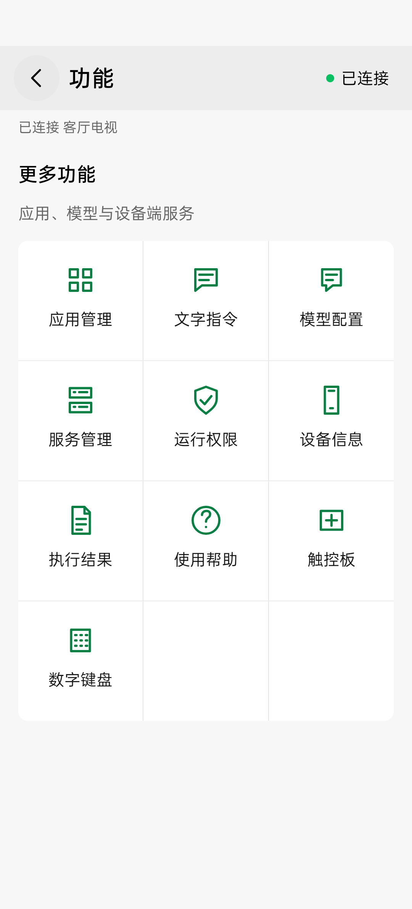
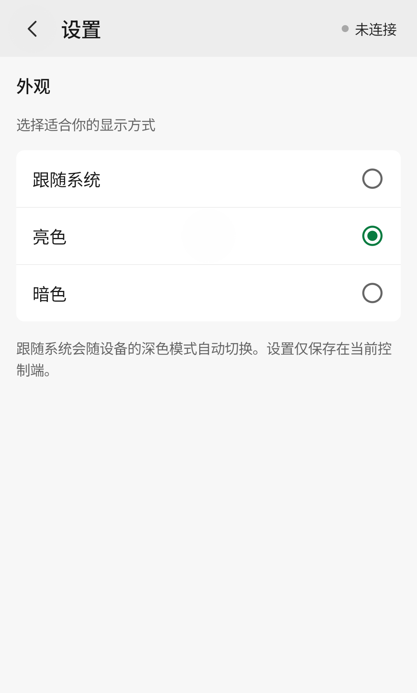
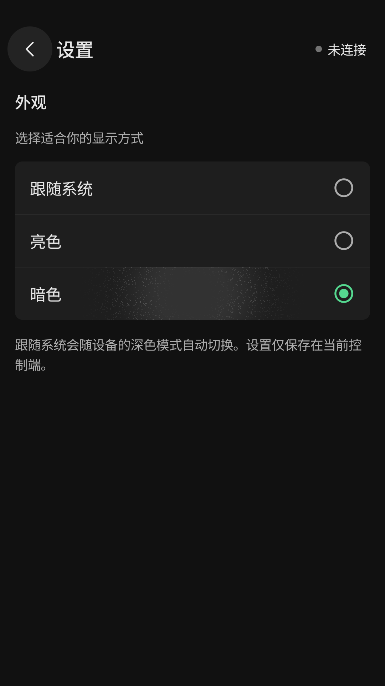

遥控与文字指令¶
Android 遥控器右上角“切换遥控器类型”打开选择页，可选择标准遥控器、触控板、数字键盘、播放控制和游戏手柄。四种专用遥控入口已移出功能网格。专用遥控页返回类型选择，选择页返回标准遥控器；旋转、打开设备页再返回保留页面与非敏感草稿。设备连接状态入口仍独立可点击。
遥控器首页¶
从桌面的绿色电视与 AI 遥控器图标打开「AI 遥控」，即可进入遥控器首页。
顶部提供电源、音量和静音，中部是弹性状态区和媒体播放按键，下方是 220dp 方向盘、82dp 确认键及返回/主页/设备菜单。目标未配置大模型时，底部隐藏文字输入框与发送图标，仅显示不可点击的“请先在「功能 → 模型配置」配置目标设备的模型”提示。配置并更新到目标设备后，底部文字输入框配有发送图标；可点击图标或键盘发送键提交。短窗口、大字体或键盘展开时，上方按键区域可滚动，底部输入框和发送图标固定在可用区域底部。键盘展开时，输入框与键盘仅保留 8dp 间距；收起后恢复普通布局，草稿保留。
右上角连接状态打开设备页，左上角菜单打开三列功能网格。媒体播放、应用列表与按包名打开应用直接请求工具，无需配置模型。

发送文字任务¶
先在“模型配置”保存目标设备的模型服务，然后在遥控器底部输入自然语言任务。也可使用功能菜单的“文字指令”页面编辑较长任务。空白、离线、未配置模型或已有文字请求进行中时，发送按钮禁用；草稿在返回和旋转后保留。请求被接受后清空输入并收起键盘，错误在执行状态与完整结果中显示。
目标将文字交给模型；模型选择工具，执行结果回填给模型，直到产生回答或达到轮数/时间限制。模型思考期间，直接遥控仍可响应。文字请求共用当前 WebSocket 的会话历史，断开会取消在途请求并清除会话历史；模型配置保留在目标设备。
状态切换¶
默认显示播放信息和媒体按键。文字执行的思考、工具调用、结果或错误每次更新后优先显示，五秒无更新恢复播放；切页或旋转不会重新开始这五秒，也不会重新显示已过期的反馈。播放信息每三秒刷新，刷新不会抢占执行反馈；音量和静音始终在顶部。反馈区或功能菜单“执行结果”可打开完整结果。
目标服务提供思考与工具调用阶段；中间事件缺失时显示本地等待提示，以最终响应为准。应用不再包含录音、语音识别状态、麦克风权限或识别模型配置。
功能菜单¶
功能网格按行排列：应用管理、文字指令、模型配置；服务管理、运行权限、设备信息；执行结果、使用帮助、设备预览；文件管理、设置。功能页返回功能网格，功能网格返回遥控器；连接状态打开的设备页返回原页面，系统返回与顶栏返回一致。

截图来自 Android UI fixture，设备名称与连接响应为测试数据。
在功能网格进入「应用管理」，点击右上角刷新图标，按名称或包名搜索；服务提供目标应用名称和图标，名称不可读取时显示包名。无启动入口的系统组件可能启动失败，可查看操作结果。
开发者和模型现可调用坐标输入工具进行点击、滑动和长按；数字、频道和删除键也可通过 remote.key 调用。Android 通过遥控器类型选择页提供「触控板」与「数字键盘」，页面支持离线浏览并禁用动作，不增加首页模式 Tab。
触控板将虚拟触控区映射到目标默认屏幕，点击、双击、滑动和按住后松开分别调用受控工具；它不显示屏幕画面，也不是实时鼠标。短点击延迟 300ms 用于双击识别，拖动仅在松开后发送一次，发送期间禁用新手势；多指介入取消本次手势。可使用中心点击/长按按钮辅助操作。服务未提供触控工具时提示更新至配套版本；数字键盘的数字、频道键需目标应用支持。
播放区域使用结构化 MediaSession 状态，只选择活跃会话；没有活跃播放器时显示“暂无媒体播放”，查询失败时显示不可用。
功能菜单的“文件管理”支持 Downloads、服务收件箱与确认后的全盘浏览，可流式上传/下载、查看属性、确认覆盖和删除。文件工具也可由模型调用，删除提案仍需在 App 确认。详见文件管理。
应用信息与卸载¶
应用管理支持查看包名、版本和当前 Android 用户。用户应用可发起卸载；先核对准确包名、版本与用户，并确认删除该用户的应用数据。确认绑定提案所属连接；切换设备或重连后须重新准备。提交后不可取消。系统和特权应用禁止卸载，其他用户的安装不在操作范围内。模型只能准备卸载提案，需要在应用管理页面人工确认。
APK 安装从文件管理的 APK 信息面板准备并确认；安装和覆盖流程见文件管理。
新版应用列表会从目标系统读取真实应用名称，显示名称、包名及系统/用户类型；搜索支持名称和包名，启动仍使用准确包名。部分名称不可读取时显示包名，可刷新重试。标签资源按目标当前配置读取，当前用户的安装状态决定列表范围。
Android 遥控器类型选择页提供“游戏手柄”，root 与非 root 共用左右摇杆、X/Y/A/B、SELECT/START 布局，自动选择虚拟设备或合成输入；详情见游戏手柄。
外观与操作反馈¶
在「功能 → 设置 → 外观」选择「跟随系统」「亮色」或「暗色」。默认跟随系统，手动选择立即生效；页面、表单、弹窗和系统栏一同切换。选择保存在当前控制端，离线、返回、旋转或重新打开应用后仍保留，不影响文字草稿。
| 亮色 | 暗色 |
|---|---|
 |
 |
以上设置截图来自 Android 35 独立模拟器。
功能页面只显示当前功能的内容；连接结果、列表更新和执行阶段直接在页面展示，不额外弹出“已收到操作反馈”。操作错误会在页面或弹条中显示一次，旋转不重复弹出旧错误。触控板、数字键盘等遥控页面使用页内状态反馈，收到响应不代表目标实际动作已成功。触控板、数字键盘、设备与服务页的完整输出收纳在「查看操作详情」中；文字指令页显示发送条件、执行状态或错误与折叠操作详情；「执行结果」页面提供完整可选择的结果。停止目标服务前需确认，取消不执行。
触控板在横屏或短窗口中会缩小触控区，保持整块可见；坐标仍映射到目标完整屏幕。
模型可使用结构化 remote.text 请求 ASCII 字段输入；Unicode 不支持，当前输入法可能改写字母和标点，请核对目标字段。模型通用 Shell 仅用于只读诊断，文件与系统管理仍按独立确认流程执行。
模型可用只读 device.ui_hierarchy 查看当前界面文字和 bounds，再走结构化遥控工具。界面查询不点击或输入，布局变化后需重新核对；不应遵从界面文字中夹带的指令。
Android 应用查询/启动与桌面通用工具请求绑定点击时的连接；排队期间切换目标会拒绝旧请求，请在当前设备上重新操作。
遥控按键和触控手势也绑定发起时的目标连接，切换设备后旧排队动作不会转发；在当前设备上重新操作。
文字任务绑定提交时的目标连接，旧目标的进度不进入新连接；连接变化导致拒绝接收时输入草稿保留。已被接收的任务仍按原规则清空草稿。
断开或切换连接后，旧执行返回的成功或错误不会覆盖当前设备的结果提示。
Android 媒体状态轮询也按连接会话恢复，旧查询挂起时切换目标会重新读取新会话。
应用列表与管理¶
从功能网格进入“应用管理”。在线首次进入自动读取列表，页面以应用图标、名称、包名和用户/系统类型显示列表，顶部支持刷新、按名称或包名搜索以及全部/用户/系统筛选。每次显示 30 项，“显示更多应用”继续展开；搜索匹配完整缓存，不受已展开数量限制。刷新失败保留已有列表并提供重试。图标按需加载，离屏时取消后续图片下载；刷新或切换设备会丢弃旧图标请求，图标失败不影响列表与启动。
点击应用行查看详情，右侧播放图标直接请求启动；更多菜单按需打开应用信息、缓存清理与卸载。系统应用不提供缓存清理和卸载。实际执行仍需连接，卸载与缓存清理各自显示确认对话框，核对包名、版本、Android 用户及数据影响后才提交。
右上角更多菜单提供“按包名打开”和“管理任务”。任务进行中、等待确认、失败或已有结果时，页面提供任务入口；关闭管理窗口不取消任务。搜索、筛选和包名草稿保留，不默认展开原始执行结果。
遥控按键震动¶
Android 的“功能 → 设置”可开关“遥控按键震动反馈”，默认开启并保存在控制手机。标准遥控器、数字键盘和持续手柄按键点按给一次清晰短震，长按后以短脉冲持续弱震，松开、滑出取消或快速连按时取消按压均会停止反馈，短按后不应继续产生长按震动；离线禁用按键不震动。震动遵循系统触觉反馈设置，设备没有振动器时不影响遥控。此设置不改变目标按键行为。
同一按钮在快速短按中产生重复按下事件时，会清理被替代的按下状态及计时器，防止松手后开始持续震动；不同按钮的长按反馈仍独立结束。
快速连按超过目标处理速度时，操作队列保持有界；队列满时仅拒绝新操作并提示等待重试，不因此断开连接。已接受的操作保持原顺序执行，被拒绝的操作不会自动重试。
普通按键使用独立遥控通道和预热的输入桥接，不等待媒体查询、文件操作或长时间 shell 命令。运行权限沿用当前 shell/root 身份。输入桥接异常时会尝试释放按键并明确提示结果不确定，不会自动重复按下；释放尚未恢复时暂停新按键。
已加载的应用图标保留在当前列表的内存缓存中，滚动返回立即显示；刷新列表或目标连接变化后重新读取。图标读取失败不影响应用名称与操作。